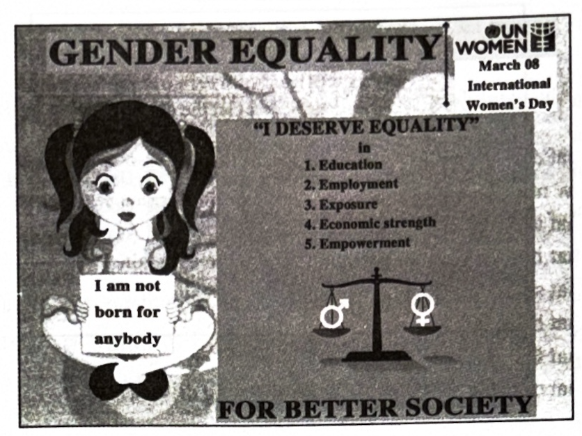
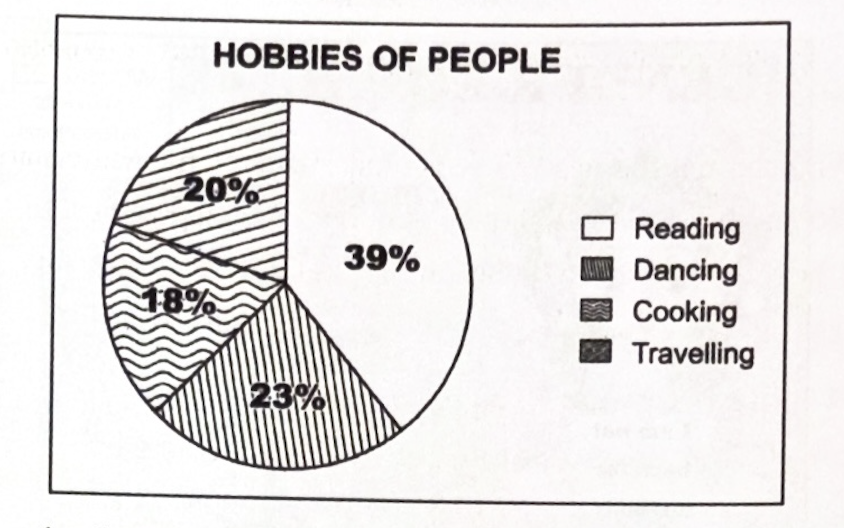
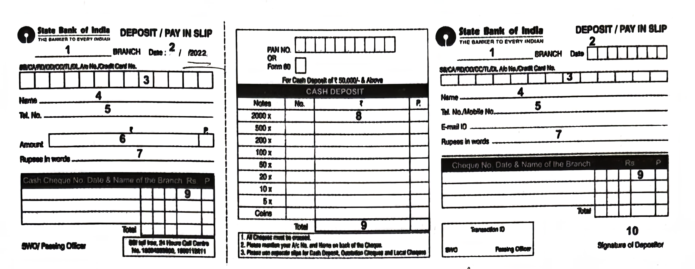
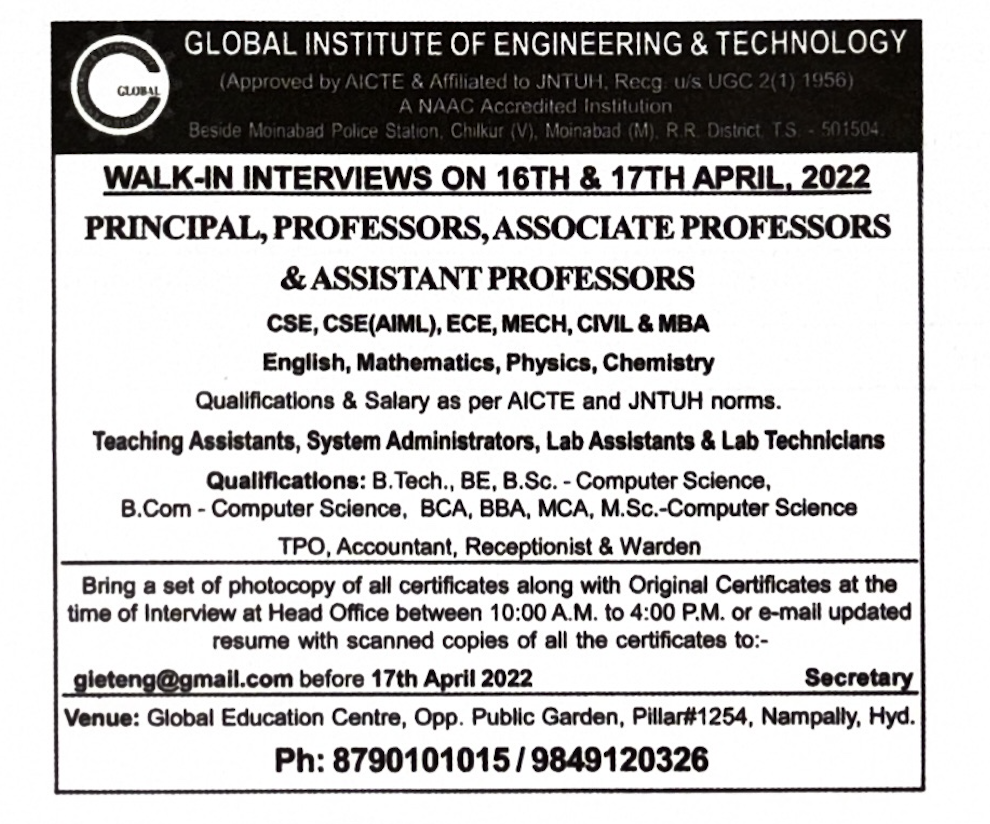

4. Read the following passage and answer ANY FOUR questions given
below.
4 × 1 = 4M
She took me into the station dining room and ordered tea, samosas, and jalebies. At once I began to relax and take an interest in this kind woman. The strange meeting with her had little effect on my appetite. I was a hungry schoolboy. I ate as much as I could without being impolite. She took pleasure in watching me and eat. I think the food strengthened our friendship, for under the influence of the tea and sweets I began to talk quite freely. I told her about my school, my friends, my likes and dislikes. She questioned me quietly from time to time, but preferred listening.
i) Who is ‘she’ referred to in this passage?
ii) Where did she take the boy?
iii) What did she order for him?
iv) The strange meeting had no effect on his appetite. Write whether it is true or false.
v) “I ate as much as I could without being impolite.” What did he mean by this statement? Choose the best answer.
vi) What did he think of the food offered by the woman?
vii) What did he exchange with her during their talk?
viii) What did the woman prefer, questioning or listening?
5. Read the following passage carefully and answer ANY FOUR questions
given after it in a word or in a sentence each.
4 × 1 = 4M
Inscriptions are writings on hard surfaces like stones or metals. In olden days, Kings used to record important information in the form of inscriptions. One such inscription of Tribhuvanamalla Vikramaditya VI (1076–1127 AD) of Western Chalukya Kings at Guduru of Palakurthy Mandal, Jangaon District bears a date in the cyclic year Krodhin, equated with the 49th year 1124 AD. The script on the inscription has the poetic stanzas in Kannada on three sides and in Telugu on the fourth side. It gives a genealogical account of the Chiefs of the Viriyala Family. It also records the endowment of the village Bammera, the birth place of Pothana, by Viriyala Malla. Pothana (1450–1510), a great scholar of Telugu and Sanskrit, rendered Sri Andhra Maha Bhagavatham into Telugu. Palakurthy, the Mandal headquarter, is also famous as the birth place of Palkuriki Somanatha, one of the most popular Telugu poets of the 13th century.
i) What are inscriptions?
ii) Where is the inscription mentioned in the passage located?
iii) How many languages do we find on this inscription?
iv) To which dynasty did King Tribhuvanamalla belong?
v) Write, from the passage, a philanthropic activity of Viriyala Malla.
vi) Who are the important literary figures associated with the region?
vii) Find the word from the passage which means a person with a deep knowledge of an academic subject.
6. Read the following advertisement and answer ANY FOUR questions that follow.
4 × 1 = 4M

i) What is the theme of the above advertisement?
ii) Which Ministry has issued this advertisement?
iii) What is the slogan given at the end?
iv) Write any two schemes mentioned in the advertisement.
v) What is the need for gender equality?
vi) What does a gender-equal society ensure?
vii) Find the word from the advertisement which means “safety or protection.”
7. Read the pie chart below and answer questions given after it.
4 × 1 = 4M

HOBBIES OF PEOPLE
i) What does the pie chart show?
ii) How many hobbies are presented in the pie chart?
iii) Which is the most preferred hobby?
iv) People with the hobbies of ________ and ________ are almost equal to those with reading hobby. (Fill in the blanks.)
v) 30 percent of the people like dancing. Write true or false.
vi) Which is the least preferred hobby?
vii) People who have the hobby of cooking are 18%. Write true or false.
viii) If people who like cooking also like dancing, then what would be the percentage of people who like dancing?
8. Rewrite the following passage/sentence using punctuation marks wherever necessary.
8 × ½ = 4M
There was an old owl. Everyday, he used to see some incidents happening around him. Yesterday he saw a boy helping his mother-in-law. Today, he saw him shouting at her. The boy’s father-in-law was kind and gentle. The boy shouted at his father-in-law too. The owl’s curiosity grew more and more to know about the boy.
9. Match the following words in Column-A with their meanings or definitions in Column-B.
4 × 1 = 4M
| Column A | Column B |
|---|---|
| i) ambidextrous | a) the study of the origin of words |
| ii) calligraphy | b) fear of writing |
| iii) etymology | c) fear of blood |
| iv) illiterate | d) able to use both hands equally well |
| v) graphophobia | e) the art of good handwriting |
| vi) hematophobia | f) the person who cannot read or write |
10. Fill the blanks in the following sentences with suitable idiomatic expressions given below. Make necessary changes in the idioms if needed.
4 × 1 = 4M
| take the rap | in a nut shell | a sea change |
| by a whisker | get the nod | a thick skin |
1) Finally, our team lost ________ and I was disappointed.
2) A politician needs ________.
3) There is ________ in the behavior of the culprit after his release from the prison.
4) Let us explain the proceedings ________.
5) Rahul ________ after a lengthy discussion among the members.
6) She was prepared to ________ for the shoplifting, though it had been her sister’s idea.
11. Make four meaningful sentences based on the verb patterns given below.
An example is given as a model.
4 × 1 = 4M
| There | verb-‘be’ | subject | complement |
|---|---|---|---|
| There | is | a painting | on the wall. |
1) ____________________________
2) ____________________________
3) ____________________________
4) ____________________________
12. Fill in any 8 blanks of the given bank form based on the information furnished below.
8 × ½ = 4M
Mr. L. Srinivas wants to deposit an amount of Rs. 9600/– on 22.05.2022 in his Savings Account with the SBI, Asifabad branch. His account number is 63217569982. He carries the amount in the denomination of Rs. 500 notes. Fill the details in the following voucher to deposit the amount.

1) ____________________________
2) ____________________________
3) ____________________________
4) ____________________________
5) ____________________________
6) ____________________________
7) ____________________________
8) ____________________________
9) ____________________________
10) ____________________________
13. Prepare a Curriculum Vitae / Resume / Bio-data in response to the following advertisement.
1 × 4 = 4M

14. Write a letter to the CEO of a chemical industry in your locality, highlighting the pollution caused by them to the nearby river. Request him/her to take necessary steps to control it.
1 × 4 = 4M
(OR)
Write a letter to your friend narrating the Silver Jubilee Celebrations of your college.
15. Read the following passage and make notes. Add a suitable title.
1 × 4 = 4M
Sripathi Panditaradhyula Balasubramanyam also known as SPB or Balu, was an Indian playback singer, television presenter, and music director in Hindi and Malayalam films. He is widely considered one of the greatest Indian singers of all time. Balasubramanyam has won six National Film Awards for Best Male Playback Singer for his works in four different languages – Telugu, Tamil, Kannada, and Hindi; 25 Andhra Pradesh State Nandi Awards for his work in Telugu cinema; and numerous other state awards from Karnataka and Tamil Nadu. In addition, he won the Filmfare Award and six Filmfare Awards South.
According to some sources, he holds the Guinness World Record for recording the highest number of songs by a singer with over 40,000 songs. He recorded 21 songs in Kannada for the composer Upendra Kumar in Bengaluru from 9 a.m. to 9 p.m. on 8 February 1981. In addition, he recorded 19 songs in Tamil and 16 songs in Hindi in a day, which has also been a record. In 2012, he received the state NTR National Award for his contribution to Indian cinema. In 2016, he was honoured with the Silver Peacock Medal as Indian Film Personality of the Year. He was a recipient of the Padma Shri (2001), Padma Bhushan (2011), and Padma Vibhushan (Posthumously) (2021) from the Government of India. He was also a recipient of the Harivarasanam Award from the Government of Kerala. On 25 September 2020, S. P. Balasubramanyam died in Chennai after being hospitalized for over a month due to complications from COVID-19.
16. Mark the stress for ANY EIGHT of the following words.
8 × ½ = 4M
i) Adjective ii) Botany
iii) Apartment iv)
Affection v) About
vi) Bachelor vii) Behind
viii) Believe ix)
Capital x) Container
17. Write a dialogue between two friends who are going to join an Engineering College.
1 × 4 = 4M
(OR)
Write a dialogue between a student and the Principal about establishing an English Language Lab at the college.